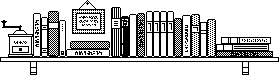
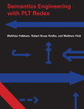
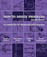
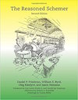
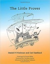

PLT
NU PLT
NU PRL
Books
HtDP
HtDP/3e
On HtDP
Sem. Eng.
Realm of Racket
Prog. Lang.
Research
Publications
Presentations
JFP
NSF: Gradual
Teaching
Programming
Thoughts
Professional Coordinates
Miscellaneous
Family
Home
Books

Semantics Engineering

How to Design Classes
How to Design Programs

The Little Books
Dan's latest Little books:


last updated on Sun May 15 09:08:13 EDT 2022
generated with
Racket